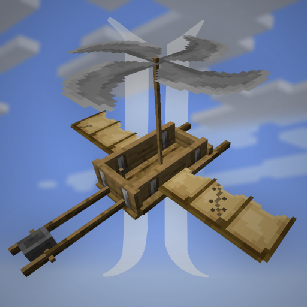

沉浸式飞机 Immersive Aircraft
共 27 个条目 · immersive_aircraft
版本: 1.4.6+1.21.1 · 来源: immersive_aircraft-1.4.6+1.21.1-neoforge.jar
A bunch of rustic aircraft to travel, transport, and explore!
MC百科中文名: 沉浸式飞机
MC百科页面: https://www.mcmod.cn/class/8527.html（沉浸式飞机 (ImmersiveAircraft)）
官方介绍 （Modrinth · 中文版由 GLM AI 翻译，仅供参考）
Immersive Aircraft（沉浸式飞行器）
本模组添加了一批质朴的飞行器，供你旅行、运输与探索！ 这些飞行器高度贴合原版风格，细节与功能都非常丰富， 但又不会过于复杂。
哦对了，多人联机也能用哦！
Biplane（双翼机）
先从经典的双翼机开始吧。速度快、单座位、驾驶难度中等。
Airship（飞艇）
速度较慢，但有两个座位。操控相当轻松，多亏了尾部的引擎，速度也还算可以。 另外还有更加庞大的货运版本！
Gyrodyne（旋翼机）
靠人力驱动的原始双人飞行器。皮实可靠，但既算不上快，也不好飞。 需要先好好助推一把，让旋翼转起来。
Quadrocopter（四旋翼飞行器）
工程学的杰作！四台螺旋桨绑在一捆竹子上。用来建造相当顺手。
Warship（飞行战舰）
铜与钢铁铸就的巨兽，为征服天空而生！ 四个座位、可转动的炮塔、6 个武器挂点，体型大得连 Minecraft 的物理引擎都不太乐意。
一些组装小道具
既然飞行器普遍比小船之类的复杂得多，我们添加了一些物品， 让合成飞行器的过程更有亲手组装的实感。
物品栏
升级槽位、燃料、旗帜、染料、火箭推进器和储物空间。给你的飞行器打造专属外观吧！
丰富的升级项
按你的喜好升级、调校你的飞行器！
为你的飞行器挂载各种武器与实用装置吧！
视频
附属模组（Addons）
资源包
不喜欢我的美术风格，和/或想要更贴合 Create 的外观？来看看这些超棒的资源包吧！
Immersive Collection（沉浸系列）
由 GLM AI 翻译，仅供参考
查看英文原文（Modrinth）
Immersive Aircraft
This mod adds a bunch of rustic aircraft to travel, transport, and explore! The aircraft have a strong focus on being vanilla-faithful with many details and functionalities, without being overly complicated.
Oh and look, multiplayer compatible!
Biplane
Let's start with the classic biplane. Fast, one seat, medium difficulty.
Airship
Slower, but with two seats. Quite easy to maneuver, with acceptable speed thanks to the engine in the back. Also comes in a bulkier cargo variant!
Gyrodyne
Human-powered primitive dual-seater. Trusty, yet neither the fastest nor the easiest to fly. Needs a good initial push to get the rotor spinning.
Quadrocopter
A masterwork of engineering! Four propellers strapped on a bunch of bamboos. It's quite handy for building.
Warship
A beast of copper and steel, built to conquer the skies! Four seats, moving turret, 6 weapon mounts and bigger than Minecraft physics would like it to be.
Some Items to Tinker
Since aircraft are generally more complex than, e.g., a boat, a handful of items have been added to make crafting aircraft feel more like actually assembling something.
Inventory
Upgrade slots, fuel, banner, dye, rocket booster, and storage. Give an aircraft your personal look!
Many Upgrades
Upgrade and tune your aircraft to your liking!
Mount various weapons and utilities to your aircraft!
Video
Addons
Resource Packs
You don't like my style and/or want better Create integration? Check out these awesome packs here!
Immersive Collection
资料来源：Immersive Aircraft
物品与方块
 飞艇
飞艇immersive_aircraft:airship · 物品竹制浮筒飞机
immersive_aircraft:bamboo_hopper · 物品双翼机
immersive_aircraft:biplane · 物品
 锅炉
锅炉immersive_aircraft:boiler · 物品
 炸弹舱
炸弹舱immersive_aircraft:bomb_bay · 物品
 货运飞船
货运飞船immersive_aircraft:cargo_airship · 物品
 经济型发动机
经济型发动机immersive_aircraft:eco_engine · 物品
 发动机
发动机immersive_aircraft:engine · 物品增强型螺旋桨
immersive_aircraft:enhanced_propeller · 物品固定旋翼机
immersive_aircraft:gyrodyne · 物品
 陀螺仪
陀螺仪immersive_aircraft:gyroscope · 物品高级陀螺仪
immersive_aircraft:gyroscope_dials · 物品
 电子陀螺仪
电子陀螺仪immersive_aircraft:gyroscope_hud · 物品重弩
immersive_aircraft:heavy_crossbow · 物品
 机身
机身immersive_aircraft:hull · 物品
 机身加固板
机身加固板immersive_aircraft:hull_reinforcement · 物品
 改良起落架
改良起落架immersive_aircraft:improved_landing_gear · 物品
 工业齿轮
工业齿轮immersive_aircraft:industrial_gears · 物品
 下界发动机
下界发动机immersive_aircraft:nether_engine · 物品
 螺旋桨
螺旋桨immersive_aircraft:propeller · 物品
 四轴飞行器
四轴飞行器immersive_aircraft:quadrocopter · 物品旋转炮
immersive_aircraft:rotary_cannon · 物品
 风帆
风帆immersive_aircraft:sail · 物品
 钢制锅炉
钢制锅炉immersive_aircraft:steel_boiler · 物品
 加固管道
加固管道immersive_aircraft:sturdy_pipes · 物品
 望远镜
望远镜immersive_aircraft:telescope · 物品
 战斗飞艇
战斗飞艇immersive_aircraft:warship · 物品